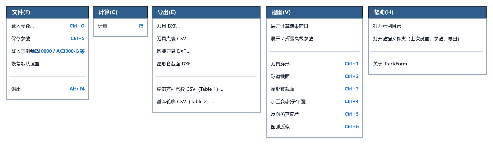

7.1 顶部菜单栏功能与全局快捷键
主窗口顶部设有一条标准 Windows 菜单栏，包含 文件(F)、计算(C)、导出(E)、视图(V)、帮助(H) 五个下拉菜单（可按 Alt + 对应字母 快速呼出）。

一、五大下拉菜单命令逐项详解
1. 文件(F) 菜单
负责参数方案档案（.json）的载入与保存、内置典型示例参数的一键载入以及恢复出厂默认设置：
| 菜单命令 | 快捷键 | 功能说明 |
|---|---|---|
载入参数… |
Ctrl+O |
从磁盘读取之前保存的 .json 参数档案文件，自动回填全部参数并立即重新计算刷新图表。 |
保存参数… |
Ctrl+S |
将当前界面上的全部基本参数、高级参数及界面展开状态保存为一个 .json 参数档案文件。 |
载入示例参数 |
子菜单 | 直接从内置 examples/ 目录一键载入典型产品示例（如 AC3300-G_椭圆_参数、Nexteer_34205673_参数 等），非常适合新手学习或对标验证。 |
恢复默认设置 |
— | 弹出确认框，确认后将全部参数、高级参数面板展开状态及当前图表标签页一键重置为出厂默认（AC3300-G）状态。 |
退出 |
Alt+F4 |
自动将当前界面参数与窗口状态保存到 last_session.json 并安全关闭软件。 |
2. 计算(C) 菜单
| 菜单命令 | 快捷键 | 功能说明 |
|---|---|---|
计算 |
F5 |
等同于点击左侧绿色的 ▶ 计算刀具廓形 按钮，立即执行全部求解、工程校验与六大图表刷新。 |
3. 导出(E) 菜单
汇总全部 6 项工程图纸与数据表导出命令（功能与左下角导出按钮区完全一致）：
| 菜单命令 | 默认文件名 | 功能说明 |
|---|---|---|
刀具 DXF… |
tool_profile.dxf |
导出精确成型刀具 CAD 工程图（含 PROFILE 折线、PROFILE_SPLINE 样条线及右侧球道截面图）。 |
刀具点表 CSV… |
tool_profile_points.csv |
导出精确成型刀具廓形坐标点表（含 z_球心 与 z_端面 双轴向基准列）。 |
圆弧刀具 DXF… |
arc_tool.dxf |
导出单圆弧近似刀具 CAD 工程图（原生 ARC 圆弧 + 尺寸标注 + Table 1 常数表）。 |
星形套截面 DXF… |
part_section.dxf |
导出星形套过球道轴向剖面 CAD 工程图（含 ANSI31 剖面线与完整尺寸标注）。 |
轮廓方程常数 CSV（Table 1）… |
table1_constants.csv |
导出球道基本轮廓方程常数表（Table 1：）。 |
基本轮廓 CSV（Table 2）… |
table2_basic_profile.csv |
导出球道基本轮廓坐标点表（Table 2：No, Z(±), Y）。 |
4. 视图(V) 菜单
负责界面面板折叠/展开控制，以及右侧 6 个可视化图表标签页的快速跳转：
| 菜单命令 | 快捷键 | 功能说明 |
|---|---|---|
展开计算结果窗口 |
— | 弹出独立可缩放的 计算结果详情 大窗口，并提供一键 复制到剪贴板 按钮。 |
展开 / 折叠高级参数 |
— | 切换左侧面板中 ▶ 高级参数（机床 / 刀尖 / 公差 / 导出） 抽屉的展开或折叠状态。 |
刀具廓形 |
Ctrl+1 |
切换到 Tab 1：精确刀具廓形视图。 |
球道截面 |
Ctrl+2 |
切换到 Tab 2：球道法向截面视图。 |
星形套截面 |
Ctrl+3 |
切换到 Tab 3：星形套轴向剖面视图。 |
加工姿态(子午面) |
Ctrl+4 |
切换到 Tab 4：子午面三摆角包络姿态视图。 |
反向仿真偏差 |
Ctrl+5 |
切换到 Tab 5：反向包络切削仿真偏差视图。 |
单圆弧近似 |
Ctrl+6 |
切换到 Tab 6：单圆弧近似刀具与球道偏差对比视图。 |
5. 帮助(H) 菜单
| 菜单命令 | 快捷键 | 功能说明 |
|---|---|---|
打开示例目录 |
— | 在 Windows 资源管理器中直接打开软件内置的 examples/ 示例文件夹（内含示例 .json 参数与示例点表 .csv）。 |
打开数据文件夹（上次设置、参数、导出） |
— | 在 Windows 资源管理器中直接打开用户数据目录，方便查找保存的参数档案（params/）与导出的工程图纸（exports/）。 |
关于 TrackForm |
— | 弹出软件版本信息、功能简介与当前数据存储路径说明对话框。 |
二、全局键盘快捷键汇总表
熟练使用以下键盘快捷键，可以让您的参数调试与看图效率翻倍：
| 快捷键 | 对应操作 | 高频使用场景 |
|---|---|---|
F5 |
执行计算 | 在输入框修改完某个参数后，左手直接按一下 F5 即可立即刷新计算结果与图表，无需移动鼠标去点按钮！ |
Ctrl + 1 ~ Ctrl + 6 |
快速切换第 1 ~ 6 个图表标签页 | 修改完参数按 F5 后，连续按 Ctrl+1、Ctrl+5、Ctrl+6 快速巡检刀具廓形、仿真偏差与单圆弧误差。 |
Ctrl + O |
载入参数档案 (.json) |
快速打开历史产品型号参数方案。 |
Ctrl + S |
保存参数档案 (.json) |
将当前调试通过的参数方案归档保存。 |
Alt + F4 |
退出软件 | 完成工作后自动保存当前会话并关闭窗口。 |